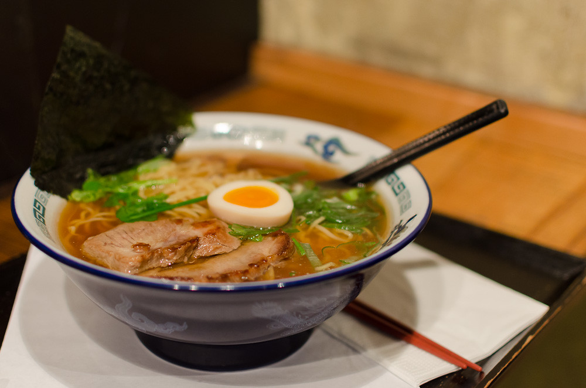

Shoyu Ramen

About the Dish
Shoyu, soy sauce, ramen is a savory noodle soup dish. It's delicious, what more can I say? :)
The recipe source: pickled plum.
Ingredients
- 1 tbsp of sesame oil
- 1 clove of minced garlic
- 1 1-inch piece of peeled and minced ginger
- 1/4 cup of soy sauce
- 1 tbsp of sake
- 1 cup of dashi
- 2 1/2 tb of mirin
- 1 cup of ramen broth (the broth the ramen noodles are cooking in)
- 1 soft hard-boiled egg (then slice into 2)
- menma (pickled bamboo)
- nori sheet
- chopped scallions
- ground white pepper
Instructions
- Place a small pot over medium-high heat. Add sesame oil, garlic, and ginger. Sauté for 2 minutes.
- Add soy sauce, sake, dashi, and mirin to the pot. Bring to a boil. Then, lower the heat, cover, and simmer on low for 15 minutes. Set aside.
- Place a pot of water on medium heat. Bring to a boil.
- Add ramen noodles and cook according to directions on package.
- Before draining the noodles, scoop 1 cup of the ramen noodle broth and add it to the small pot (shoyu broth). Stir.
- Drain the noodles and divide them into 2 bowls.
- Pour soup into bowls and add toppings.